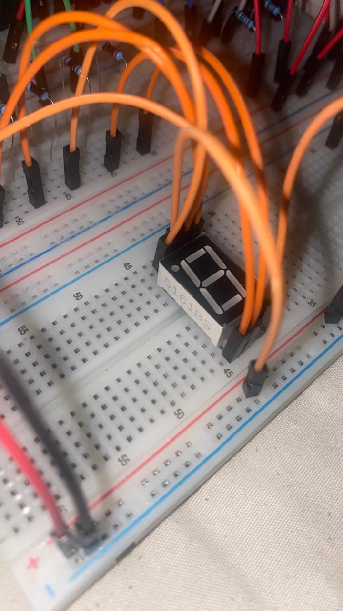

Digital logic
NAND-based arithmetic, an S-R latch for mode memory, output multiplexing and display-driving logic.
HARDWARE / CAR150S / 2026
A NAND-based arithmetic unit exploring addition, subtraction and mode memory. A group project I led as the primary contributor, from design through documentation.
Design and simulation case study · Hardware completion not verified
I was the group leader and primary contributor, carrying out most of the project work from start to finish. My work spanned the design and simulation process, test preparation, technical documentation and demonstration preparation.
This was a CPUT group project, and I acknowledge my teammates’ participation. The work is presented as a group outcome with my leadership and primary contribution identified, rather than as a solely individual project.
The project explores single-bit addition and subtraction, stored mode selection and visual output. Although called an ALU in the coursework, this version performs arithmetic operations only.
The supplied design history contains an earlier Logisim model using built-in arithmetic and multiplexer components, followed by a model containing 24 NAND gates. The board export contains six 74HC00 packages. Working across these representations helped connect abstract logic with individual gates and component-level wiring.
THE PHYSICAL BUILD
A closer look at the prototype wiring and seven-segment display.


These build photographs document the physical assembly; they do not establish completed functional testing. Select a photo to view it in full.
NAND-based arithmetic, an S-R latch for mode memory, output multiplexing and display-driving logic.
Logisim circuit files, a Tinkercad Circuits working design, an EAGLE-format board export, and technical, test and demonstration documents.
The technical report records eight passing functional netlist cases. A separate portfolio-preparation check on 31 October 2026 evaluated the supplied board export and also passed all eight static input/mode combinations, including mode retention after button release and display-driver polarity.
This is an ideal Boolean netlist result. It does not validate timing, electrical behaviour or physical hardware. The supplied Tinkercad result column and breadboard sign-off are unfilled, so this case study does not claim a completed hardware demonstration or an independently verified live Tinkercad run.
The review separated logical correctness from hardware readiness. The report flags supply regulation and decoupling work; the board export contains six decoupling capacitors without connected pads. Completion of those corrections is not established by the supplied files.
The latch also needs deliberate mode selection at startup, and simultaneous mode-button presses produce an invalid state. These findings reinforced the value of testing stateful behaviour as well as arithmetic outputs.
The documents propose extending the design to multiple bits. That remains a future development requiring separate carry/borrow-path and timing validation; it is not a demonstrated capability of this portfolio version.
Computer Architecture 1 (CAR150S), Cape Peninsula University of Technology, Semester 2, 2026. Documented with the lecturer’s permission. The assignment brief, rubric, assessment materials, private correspondence and personal student information are excluded.
This public case study summarises the project and my learning. Original project files and detailed submission documents are retained privately.
Copyright © 2026 Noluthando Palesa Basi, for original material owned by the author. All rights reserved. Teammates, CPUT and third parties retain their respective rights. No ownership of their material is claimed. No additional permission to reproduce, redistribute or modify this material is granted, except as permitted by applicable law or the hosting platform’s terms. Obtain permission from the relevant rights holder for other uses.
This is a portfolio showcase, not an open-source release. Please do not submit this work as your own assessment work.